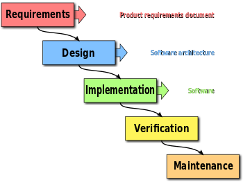
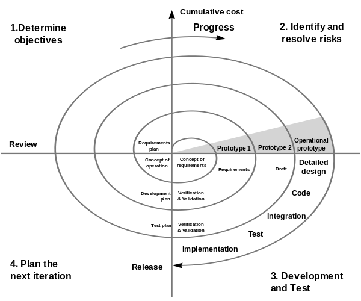
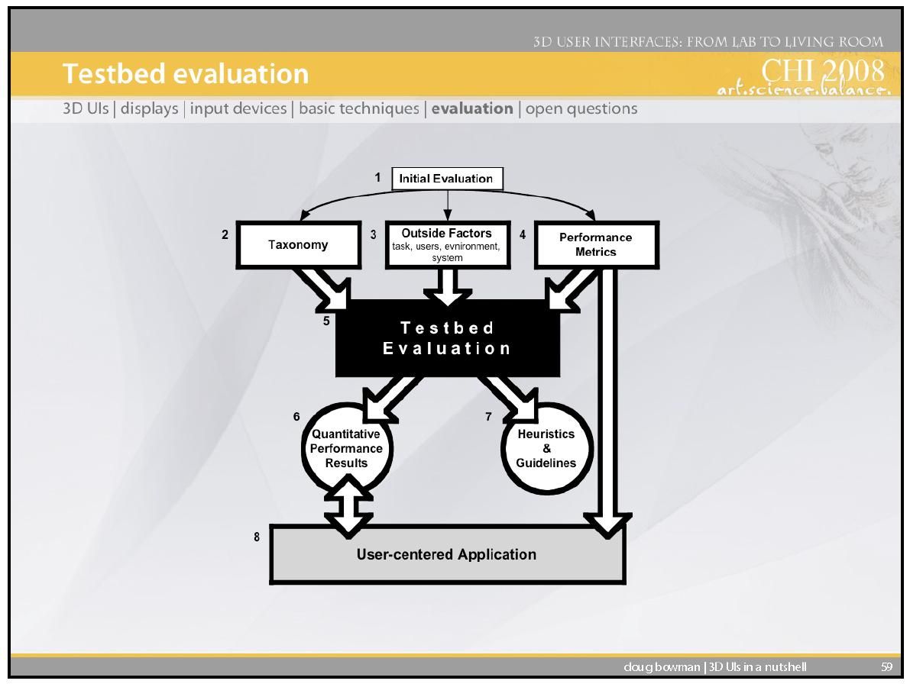

Starts with mouse orbit like whitevoid, inertia, Music
Like Eames degrees
Restricted to Solar system as focus.
3DUI
3DUI:
Slider Bar – Scrolling (We could have control for exploded view)
Waypoints
Mouse Orbit
Labels
Zoom out
Cursor lock, switch
Idle animations
Ease-ins, outs, Fade-ins, outs
2 / 61
Use →← or click buttons to navigate
3D Interactive Media Development
CW Overview and Recap
3 / 61
Use →← or click buttons to navigate
3D Interactive Media Development
CW Scope – 3DUI, 3DVE - 3D Content Creation/Production Software
3D Content Creation/Production Software
3D World Representation with Navigation and Transformation
2D/3D Input Devices and Paradigms
2D/3D UI Concepts and Research
3D Platforms
4 / 61
Use →← or click buttons to navigate
3D Interactive Media Development
3DUI CW Framework – Concepts - Lego Based Construction
Lego Based Construction
Mecabricks – use to make variety for builds
Minifigs with Animation – will be given one.
VE Perceptual Structure/Navigation
Exploded View or 3D or 2.5D Diorama
Waypoint/Mouse Orbit or 3rd Person Navigation
VE Interaction – Selection/Manipulation
HUD, 2D Menu in 3D World
2D Input control of Object/3D Object Widget (on screen joypad)
State changes by Keyboard/Menu
Collision Triggering
System Control – Animation
Animation Triggering
Narrative Animation
Scripted movement control
5 / 61
Use →← or click buttons to navigate
3D Interactive Media Development
3DUI CW Framework – Elements - Elements:
Elements
Navigation
Interaction
System Control
6 / 61
Use →← or click buttons to navigate
3D Interactive Media Development
3DUI CW Framework - Platform - Framework for Module:
Framework for Module
Inputs – Mouse, Keyboard
Software/Hardware Platform - Desktop
Output –2D Screen Display
This is plenty complex to explore the wide range of choice just for these. We will develop 3D Interaction via 2D manipulation of a 3D environment. We might use a 3D Widget for direct object manipulation as a stretch target, or do touch input and widgets for android, or Accelerometer and 360 video with 3DUI
7 / 61
Use →← or click buttons to navigate
3D Interactive Media Development
3DUI CW Framework – 3D Interaction - So…
So…
2D Manipulation of 3D
(2D Input Devices with Direct Mappings to 3D)
3D Manipulation of 3D
(3D Input Devices)
Razer Hydra – 3D Facebook
Immersive 3D with PUI
Brenda Laurel
3D Input
8 / 61
Use →← or click buttons to navigate
3D Interactive Media Development
CW 3D Interaction Techniques - 3D UI: 3D interaction Widgets.
3D UI: 3D interaction Widgets.
2D HUD on 3D POV
2D Menu on 3D POV
2D Menu within 3D VE
2D mouse selection of button for 3D Interaction
2D mouse direct control of object
2D mouse direct control of 3D Gimbal/Widget for object
The <> relationship represents a mandatory part of a use case's workflow, where one use case's behavior is always included in another. In contrast, the <> relationship signifies optional behavior that adds functionality to a base use case under specific conditions.
Includes
The base use case is incomplete without the included use case.
The included use case is mandatory and not optional.
Extends
The extending use case is dependent on the extended (base) use case.
The extending use case is usually optional and can be triggered conditionally.
In the diagram you can see that the extending use case is triggered only for deposits over 10,000 or when the age is over 55.
The extended (base) use case must be meaningful on its own. This means it - base use case should be independent and must not rely on the behavior of the extending use case.
A software architectural pattern for implementing user interfaces on computers. It divides a given software application into three interconnected parts, so as to separate internal representations of information from the ways that information is presented to or accepted from the user.
Traditionally used for desktop graphical user interfaces (GUIs), this architecture has become popular for designing web applications.
As with other software patterns, MVC expresses the "core of the solution" to a problem while allowing it to be adapted for each system.
The central component of MVC, the model, captures the behavior of the application in terms of its problem domain, independent of the user interface.
Model
The model directly manages the data, logic, and rules of the application.
View
A view can be any output representation of information, such as a chart or a diagram. Multiple views of the same information are possible, such as a bar chart for management and a tabular view for accountants.
Controller
The third part, the controller, accepts input and converts it to commands for the model or view.
In addition to dividing the application into three kinds of components, the model–view–controller design defines the interactions between them.
Model
A model stores data that is retrieved according to commands from the controller and displayed in the view.
View
A view generates new output to the user based on changes in the model.
Controller
A controller can send commands to the model to update the model's state (e.g., editing a document). It can also send commands to its associated view to change the view's presentation of the model (e.g., by scrolling through a document).
3DUI CW 1 (Group) - 3. Planning for CW2 3DUI Interactivity Report (Group Presentation, 1 per group)
3. Planning for CW2 3DUI Interactivity Report (Group Presentation, 1 per group)
c. Project Management Methodology
33 / 61
Use →← or click buttons to navigate
3D Interactive Media Development
Module Scope – Working Practice - Methodology:
Methodology
Working, Management and Development Techniques to achieve objectives (2.1.8)
Peer Review, Group Work, Organisation (2.3.2)
Problem Solving Strategies and Methodology (2.1.3)
34 / 61
Use →← or click buttons to navigate
3D Interactive Media Development
Module Scope Working Methodology - Some Examples:
Some Examples
Agile
Extreme Programming
Waterfall
Spiral
Incremental
35 / 61
Use →← or click buttons to navigate
3D Interactive Media Development
Module Scope Working Methodology - Some Examples:
Some Examples
Agile
http://agilemethodology.org/
The Agile movement seeks alternatives to traditional project management. Agile approaches help teams respond to unpredictability through incremental, iterative work cadences and empirical feedback. Agilists propose alternatives to waterfall, or traditional sequential development.
Scrum emphasizes empirical feedback, team self management, and striving to build properly tested product increments within short iterations. Doing Scrum as it’s actually defined usually comes into conflict with existing habits at established non-Agile organizations.
36 / 61
Use →← or click buttons to navigate
3D Interactive Media Development
Module Scope Working Methodology - Some Examples:
Some Examples
Agile
http://agilemethodology.org/
Individuals and interactions over processes and tools
Scrum is the most popular way of introducing Agility due to its simplicity and flexibility.
Scrum emphasizes empirical feedback, team self management, and striving to build properly tested product increments within short iterations. Doing Scrum as it’s actually defined usually comes into conflict with existing habits at established non-Agile organizations.
1.Collaborate – High Bandwidth Communication in Real Time
2. Work Together – Follows good communication – Pairing, Paired Programming
3. Honor Priorities – Work on Highest ranked priority story in Backlog for next iteration
4. Respect the Customer, Process, Product, Team, and Each Other
5. Do the simplest thing that works, then stop
6. Improve every iteration
39 / 61
Use →← or click buttons to navigate
3D Interactive Media Development
Module Scope Working Methodology - Some Examples:
Some Examples
Waterfall
The Waterfall software development model has sequential and distinct phases. After completing each development phase, a milestone review should be conducted. The phases of the waterfall model are “requirements analysis and definition, system and software design, implementation and unit testing, integration and system testing, operation and maintenance” (Fairley, 2009). The development cycle can only move from one phase to the next after a milestone review is conducted.
40 / 61
Use →← or click buttons to navigate
3D Interactive Media Development
Module Scope Working Methodology - Some Examples:
Some Examples
Waterfall
The waterfall development model originates in the manufacturing and construction industries: highly structured physical environments in which after-the-fact changes are prohibitively costly, if not impossible. Because no formal software development methodologies existed at the time, this hardware-oriented model was simply adapted for software development.

41 / 61
Use →← or click buttons to navigate
3D Interactive Media Development
Module Scope Working Methodology - Some Examples:
Some Examples
Waterfall
The disadvantage of the Waterfall model is that this model ignores any requirements or needs that may change as the product is being developed. By using this model, it can be difficult to make changes once the project is underway. The reasons for this limitation are the nature of the milestone reviews and the time taken between each one. Problems are caught at the milestones which may be too late. If the problems were detected earlier, they could have been fixed earlier in development (Fairley, 2009).
42 / 61
Use →← or click buttons to navigate
3D Interactive Media Development
Module Scope Working Methodology - Some Examples:
Some Examples
Incremental
Another type of development model is the incremental model. Unlike the Waterfall model where the developer attempts to create the application in one attempt, Incremental development is fragmented into increments. This type of methodology prioritises the development of essential requirements in early increments.
After each increment is developed, the increment is tested and validated meaning that problems can be found earlier in the development cycle. As the code is developed, it may need rewriting and revalidating. This model allows the developer to “build-test-demonstrate’ progress (Fairley, 2009). Early increments can also act as prototypes that can be shown to stakeholders or used as a proof of concept .
43 / 61
Use →← or click buttons to navigate
3D Interactive Media Development
Module Scope Working Methodology - Some Examples:
Some Examples
Incremental
Disadvantages of the incremental build happen when an excess amount of time is spent reworking increments. Another issue arises when the planned requirements are not developed in an increment (Fairley, 2009).
44 / 61
Use →← or click buttons to navigate
3D Interactive Media Development
Module Scope Working Methodology - Some Examples:
Some Examples
Incremental – Iterative- Agile
Iterative - you don't finish a feature in one go. You are in a code >> get feedback >> code >> ... cycle. You keep iterating till done.
Incremental - you build as much as you need right now. You don't over-engineer or add flexibility unless the need is proven. When the need arises, you build on top of whatever already exists. (Note: differs from iterative in that you're adding new things.. vs refining something).
Agile - you are agile if you value the same things as listed in the agile manifesto. It also means that there is no standard template or checklist or procedure to "do agile". It doesn't overspecify.. it just states that you can use whatever practices you need to "be agile". Scrum, XP, Kanban are some of the more prescriptive 'agile' methodologies because they share the same set of values. Continuous and early feedback, frequent releases/demos, evolve design, etc.. hence they can be iterative and incremental.
The spiral model is a risk-driven process model generator for software projects. Based on the unique risk patterns of a given project, the spiral model guides a team to adopt elements of one or more process models, such as incremental, waterfall, or evolutionary prototyping).
46 / 61
Use →← or click buttons to navigate
3D Interactive Media Development
Module Scope Working Methodology - Some Examples:
Some Examples
Spiral
Boehm lists these assumptions as follows
Boehm lists these assumptions as follows:
The requirements are known in advance of implementation.
The requirements have no unresolved, high-risk implications, such as risks due to cost, schedule, performance, safety, security, user interfaces, organizational impacts, etc.
The nature of the requirements will not change very much during development or evolution.
The requirements are compatible with all the key system stakeholders’ expectations, including users, customer, developers, maintainers, and investors.
The right architecture for implementing the requirements is well understood.
There is enough calendar time to proceed sequentially.
47 / 61
Use →← or click buttons to navigate
3D Interactive Media Development
Module Scope Working Methodology
Module Scope Working Methodology

48 / 61
Use →← or click buttons to navigate
3D Interactive Media Development
3DUI CW 1 (Group) - 3. Planning for CW2 3DUI Interactivity Report (Group Presentation, 1 per group)
3. Planning for CW2 3DUI Interactivity Report (Group Presentation, 1 per group)
d. Commercial Analysis
49 / 61
Use →← or click buttons to navigate
3D Interactive Media Development
Module Scope – Working Practice - System/Commercial Analysis:
System/Commercial Analysis
Analyse current and future requirements for system (2.1.4)
Deploy Theory in Evaluation (2.1.5)
Analyse Commercial Issues (2.1.7)
Evaluate outcomes (4.2.2)
50 / 61
Use →← or click buttons to navigate
3D Interactive Media Development
3DUI CW 1 (Group) - 3. Planning for CW2 3DUI Interactivity Report (Group Presentation, 1 per group)
3. Planning for CW2 3DUI Interactivity Report (Group Presentation, 1 per group)
c. Commercial Analysis

51 / 61
Use →← or click buttons to navigate
3D Interactive Media Development
Module Scope – Working Practice - System/Commercial Analysis:
System/Commercial Analysis
Games Experience Questionnaire
52 / 61
Use →← or click buttons to navigate
3D Interactive Media Development
3DUI CW 1 (Group) - 3. Planning for CW2 3DUI Interactivity Report (Group Presentation, 1 per group)
3. Planning for CW2 3DUI Interactivity Report (Group Presentation, 1 per group)
e. Navigation Framework (with mouse and keyboard)
Some Examples are
Some Examples are:
coded controller with collision, mouse for camera zoom and object selection
Objects are Waypoints for navigation, with mouse orbit of Waypoint
Code Example
For more see 3D User Interfaces: Theory and Practice and Lectures
53 / 61
Use →← or click buttons to navigate
3D Interactive Media Development
3DUI CW 1 (Group) - 3. Planning for CW2 3DUI Interactivity Report (Group Presentation, 1 per group) (cntd…)
3. Planning for CW2 3DUI Interactivity Report (Group Presentation, 1 per group) (cntd…)
f. Interactivity (Selection and Manipulation, Triggers with mouse and keyboard)
Some Examples are
Some Examples are:
3D Interaction – Unity UI 2D Buttons/Menus in 3D World Space
3D Interaction - Mouse interaction directly with object via 3D Gimbal
2D Interaction – Unity UI 2D Heads Up Display
State changes/Triggers with keyboard
Collisions
Code Example
For more see 3D User Interfaces: Theory and Practice and Lectures
g. Animation, Movement, Narrative
Some Examples are
Some Examples are:
Figure and non-figure Animation, Triggered and Narrative
Transforms and Scripted Movement or Interaction
Investigate Unity Options
54 / 61
Use →← or click buttons to navigate
3D Interactive Media Development
3DUI CW 1 (Group) - 3. Planning for CW2 3DUI Interactivity Report (Group Presentation, 1 per group) (cntd…)
3. Planning for CW2 3DUI Interactivity Report (Group Presentation, 1 per group) (cntd…)
g. Lighting, Shaders, and Texturing
Examples: Provisional Plans based on work and learning so far